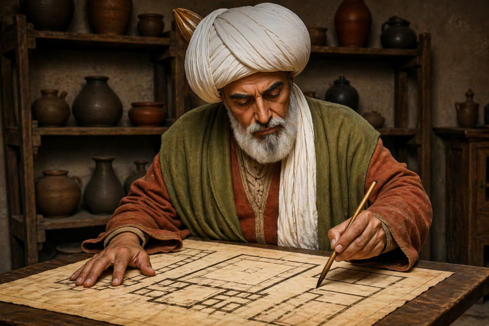

"Şifanın, Bilimin ve Merhametin Asırlık Mirası"
1488 yılında 8. Osmanlı Padişahı Sultan II. Bayezid, şu an Ukrayna sınırları içinde olan Kili ve Akkerman Kalelerinin fethi için yapılacak sefer hazırlıklarını görmek amacıyla Edirne'ye geldiğinde, şehrin ileri gelenleri sarayın divanhanesinde padişahın huzuruna çıkarak, adaletin hâkimi ulu padişahtan bir dilekte bulunurlar.
Büyük bir şehir olan, yolcuların, tüccarların, seyyahların uğrak noktası Edirne'ye bir hastane yaptırmasını isterler. Sultan II. Bayezid, babası Fatih Sultan Mehmet'in doğduğu şehir olan Edirne'yi çok sevdiği için bu isteği geri çevirmez ve Tunca Nehri'nin kıyısında, yemyeşil bir arazide içinde bir darüşşifa, yani hastanenin de bulunduğu büyük bir külliye yapılmasını emreder.

Bu önemli görev dönemin mimarbaşısı Hayrettin'e verilir. Hemen hazırlıklara başlanır, yapılacak külliyenin planları çizilir, maketleri hazırlanır ve imparatorluğun en maharetli taş ve mermer ustaları bu iş için görevlendirilir.

Aynı yılın mayıs ayında, Padişahın da katıldığı görkemli bir törenle, dualar eşliğinde Külliyenin temeli atılır. Osmanlı'nın sosyal devlet anlayışının en önemli simgelerinden biri olacak o büyük külliyenin taş duvarları yavaş yavaş yükselmeye başlar. İnşaat, zamanın teknik ve ekonomik şartları düşünüldüğünde çok kısa sayılabilecek bir sürede, sadece dört yıl içinde tamamlanarak 1488 yılında büyük bir törenle hizmete açılır.
Eski payitaht Edirne'ye çok büyük bir değer katan bu külliye, şu ana bölümlerden oluşmaktadır:
| 1- Darüşşifa (Hastane) | 7- Hamam |
| 2- Tabhane (Misafirhane) | 8- Değirmen ve Su Deposu |
| 3- Tıp Medresesi | 9- Sıbyan Mektebi (İlkokul) |
| 4- Camii | 10- Mehteran Mektebi |
| 5- İmaret (Mutfak, aşevi) | 11- Muvakkithane (Zaman Merkezi) |
| 6- Köprü |
Sadece Edirne'ye değil, çevresindeki şehir ve köylere de aralıksız olarak 400 yıl gibi uzun süre hizmet vermiş olan bu şifa yurdu, Osmanlı İmparatorluğunun zayıflaması, vakıf sisteminin dağılması ve ardından gelen işgallerle önemini yitirmeye başlar.
Cumhuriyet sonrası yaşanan ekonomik sıkıntılar nedeniyle yıkılıp yok olma tehlikesi ile karşı karşıya kalan bu abidevi yapı, 1984 yılında Trakya Üniversitesi'ne devredilir. Kapsamlı bir restorasyon sonrası eğitim alanları olarak kullanılmaya başlanan binaların kaderi, Darüşşifa'nın 23 Nisan 1997 tarihinde Sağlık Müzesi olarak hizmete girmesiyle tamamen değişir.
← Kaydırın veya ok tuşlarını kullanın →
Bugün Sultan II. Bayezid Külliyesi, zaman içinde ülkemizin en seçkin kültür varlıklarından biri haline gelmiş, geçmişin şifa yöntemlerini geleceğe aktaran canlı bir tarih hazinesidir.